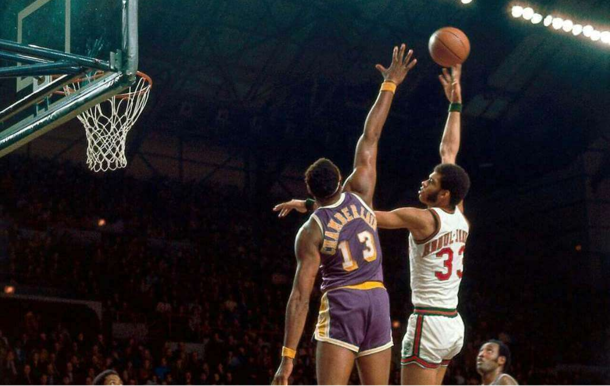
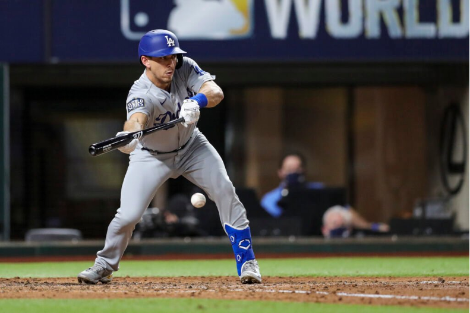

Hands Up
In the growing era of positionless basketball where we see many NBA teams opting to run small ball lineups, there’s a lot more that comes into play in crafting an elite defense than just having a couple seven footers on…


In the growing era of positionless basketball where we see many NBA teams opting to run small ball lineups, there’s a lot more that comes into play in crafting an elite defense than just having a couple seven footers on…

Due to the COVID-19 pandemic, Major League Baseball instituted several new rules in order for its 60-game season to be played while keeping its players healthy. Probably the most dramatic of these rules was starting all…